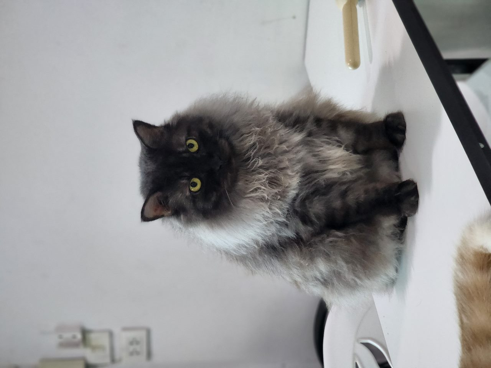

เกี่ยวกับผู้จัดทำ

นายทวีรักษ์ ทูลพุทธา
โรงเรียนพรหมานุสรณ์จังหวัดเพชรบุรี
เกี่ยวกับโปรเจกต์นี้
เว็บไซต์นี้จัดทำขึ้นเพื่อเป็นแหล่งรวบรวมแบบทดสอบสำหรับทบทวนและเตรียมความพร้อมในรายวิชาฟิสิกส์ และวิชาวิทยาศาสตร์โลกและอวกาศ สำหรับนักเรียนระดับชั้นมัธยมศึกษาตอนปลาย โดยมุ่งหวังให้นักเรียนได้ฝึกฝนทำโจทย์ที่หลากหลายและมีคุณภาพ เพื่อเพิ่มความมั่นใจและพัฒนาศักยภาพของตนเอง